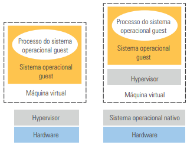
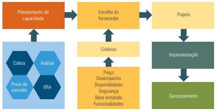

---
---
{% include head-aula.html page-title="Aula 12 - InfraTI" %}
{% include heading-aula.html heading="Virtualização de Servidores: funcionamento<" %} 1. Funcionamento da
virtualização de servidor
A virtualização de servidores utiliza monitores de máquinas virtuais, também chamados de
hypervisores, que atuam como uma camada de software entre o sistema operacional e o hardware
físico. Essa camada permite que múltiplas máquinas virtuais (VMs) operem sobre o mesmo hardware, cada uma com
seus próprios recursos isolados.
Existem três categorias de virtualização:
- Hardware: camada de virtualização instalada diretamente sobre o hardware físico. Ex: VMware
ESX, XEN, Hyper-V.
- Sistema operacional: particiona logicamente o sistema para múltiplas instâncias. Ex: Jails,
Solaris Zones, KVM, VirtualBox.
- Linguagem de programação: cria uma máquina abstrata para execução de aplicações. Ex: Java
Virtual Machine (JVM).
1.1 Tipos de hypervisores
- Tipo I (bare-metal): executados diretamente no hardware. Têm maior desempenho e segurança.
Ex: VMware ESXi, Microsoft Hyper-V.
- Tipo II: funcionam sobre um sistema operacional já instalado. São mais fáceis de instalar,
mas com desempenho inferior. Ex: VirtualBox, VMware Workstation.

Os principais benefícios são: redução de servidores físicos, menor consumo de energia, menos emissão de poluentes
e menor produção de lixo eletrônico. Além disso, otimiza os tempos ociosos da CPU, reduz gastos com upgrades e
possibilita alta escalabilidade.
1.2 Conceito de instância
Instância é a configuração de uma máquina virtual que pode ser transferida entre servidores físicos. Permite
backup, recuperação de desastres, migração e balanceamento de carga.
1.3 Tipos de virtualização x86
| Definição |
Desvantagens |
| Virtualização completa: não altera o sistema operacional guest. Alta segurança e
portabilidade. |
Menor desempenho por causa do monitoramento constante do hypervisor. |
| Paravirtualização: o sistema guest é adaptado para interagir diretamente com o
hypervisor. Melhor desempenho. |
Necessita acesso ao código-fonte para modificar o sistema guest. |
1.4 Cenários da virtualização
- Consolidação de servidores: múltiplas VMs em um servidor físico, reduzindo espaço, energia
e manutenção.
- Virtualização de desktops: uso de thin clients com diferentes sistemas operacionais
hospedados nas VMs.
- Hospedagem de sistemas legados: execução de sistemas e bibliotecas antigas de forma
isolada.
- Data center dinâmico: infraestrutura ágil com realocação de VMs sem impacto aos usuários.
1.5 Licenciamento
O licenciamento varia conforme os fabricantes. Pode ser por socket (núcleo físico) ou por
instância de VM. A adoção de Linux pode reduzir custos, mas versões gratuitas não são recomendadas para produção
devido à ausência de suporte.
1.6 Limites da virtualização
- Carga excessiva: certos aplicativos exigem muito desempenho e podem ser prejudicados pela
sobrecarga do hypervisor.
- Licenciamento: controle rigoroso é necessário para evitar uso indevido de software.
- Capacitação da equipe: é essencial treinamento contínuo para administrar o ambiente
virtualizado.
2. Exercício básico de virtualização
O exercício propõe um projeto completo, com fases que incluem planejamento, testes e implementação. As etapas
são:

2.1 Planejamento da capacidade
- Coleta: inventário de servidores, uso de memória, CPU, banda, disco etc.
- Análise: avaliação de desempenho e definição dos recursos necessários.
- Prova de conceito (POC): instalação, configuração e testes por equipe especializada.
- Fase I – levantamento: definição das características e planejamento do escopo do
projeto.
- Fase II – planejamento: detalhes da solução, definição do período de execução e do
plano de testes.
- Fase III – construção: instalação, configuração e realização dos testes da estrutura
virtualizada.
- Fase IV – gerenciamento: verificação dos objetivos, reavaliação da solução e próximos
passos. Ao final dessa fase, já se tem ideia da capacidade de uso da virtualização e dos valores
financeiros.
- Verificação de compatibilidade com a infraestrutura existente.
- Avaliação de desempenho das máquinas virtuais e dos recursos alocados.
- Testes de integração com sistemas legados e aplicações críticas.
Avaliação de disponibilidade (VRA): relatório com impactos, custos e retorno sobre investimento
(ROI).
2.2 Escolha do fornecedor
Deve considerar critérios como: preço, desempenho, disponibilidade, segurança, base instalada e funcionalidades.
2.3 Projeto
- Especificações do sistema: requisitos de software, backup, rede e armazenamento.
- Plano de implementação: cronograma, etapas de migração e verificação de recursos.
2.4 Implementação
- Servidores: utilizar equipamentos homologados, definir licenciamento, cuidar do projeto de
migração.
- Armazenamento: definir rede, backup, failover e balanceamento de carga.
2.5 Gerenciamento
Ferramentas do fabricante do hypervisor são usadas para monitoramento, relatórios e controle de desempenho das
VMs.
Veja o seguinte vídeo para melhor entendimento: link
3. Considerações finais
A virtualização de servidores permite maior eficiência e flexibilidade, possibilitando economia e escalabilidade.
Um projeto bem estruturado garante alta disponibilidade, menor custo e prepara o ambiente para a migração para a
nuvem.
{% include nav-aula.html materia="infraestruturadeti" aula="13" %}
{% include footer.html %}